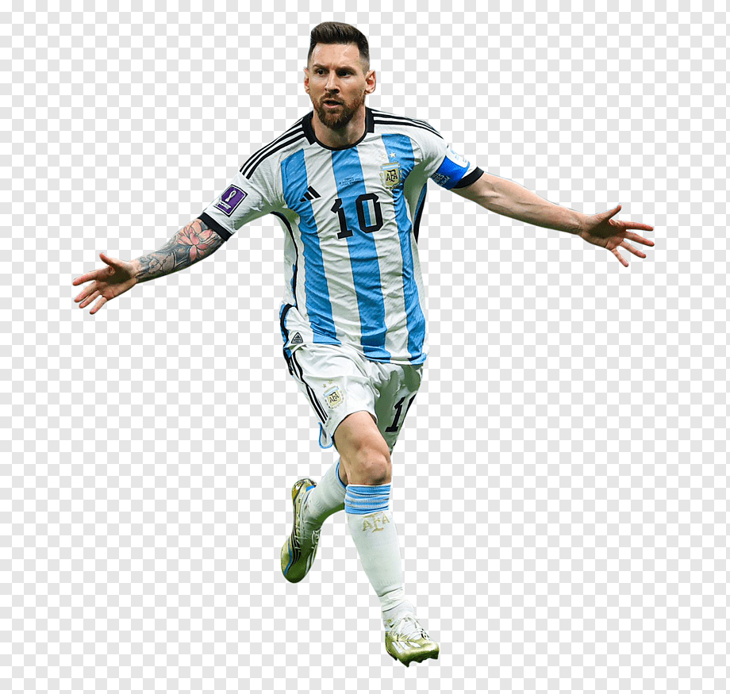
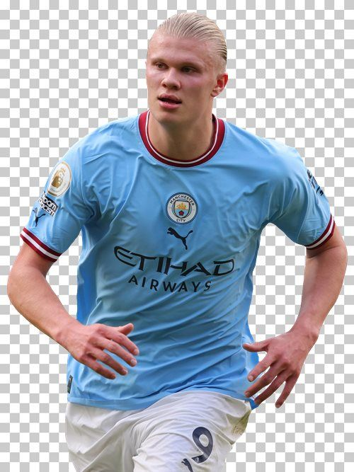
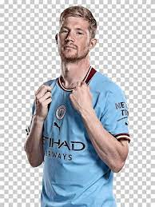

La gala de el balon de oro, se festejara el dia 30 de octubre de 2023
en la cual se premiara al mejor jugador de la temporada, mejor jugadora, mejor entrenador,
mejor jugador joven y el mejor gol.
| NOMBRE | GOLES | ASISTENCIAS | PARTIDOS |
|---|---|---|---|
| Leo Messi | 32 | 25 | 52 |
| Erling Haaland | 52 | 9 | 53 |
| Kevin de Bruyne | 10 | 31 | 49 |
| Rodri | 4 | 7 | 56 |
| Mbappe | Diego | Diego | Diego |
Para mi el premio se lo deberia ganar Leo Messi por sus buenos numeros en
paris saint-germain y en la seleccion argentina, ademas de los titulos que ha
obtenido en la temporada siendo figura en el mundial, Erling Haaland lo puede
ganar por su gran acierto de cara a porteria ademas de ganar el triplete en europa,
kevin de Bruyne de igual manera gano el triplete con el Manchester city pero sus
numeros no terminan de ser tan buenos como los de Haaland.
Para mi Diego Oquendo Messi tambien deberia ganar el balon de oro
  